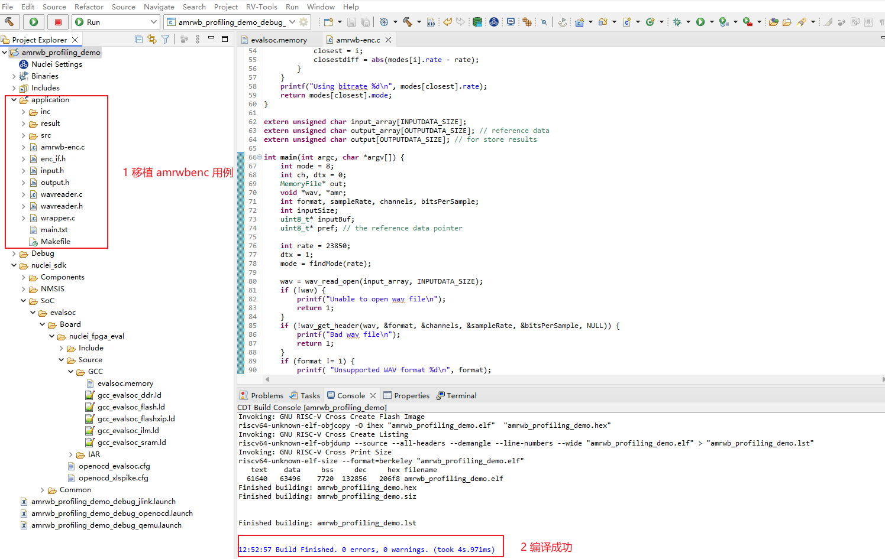
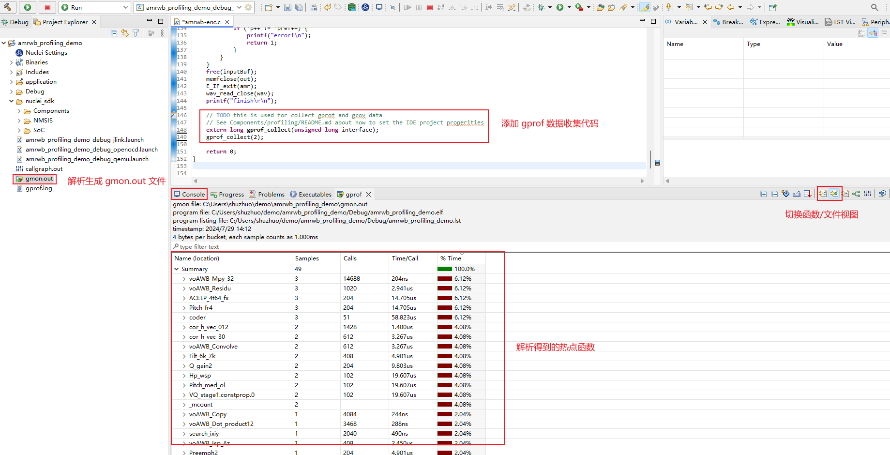
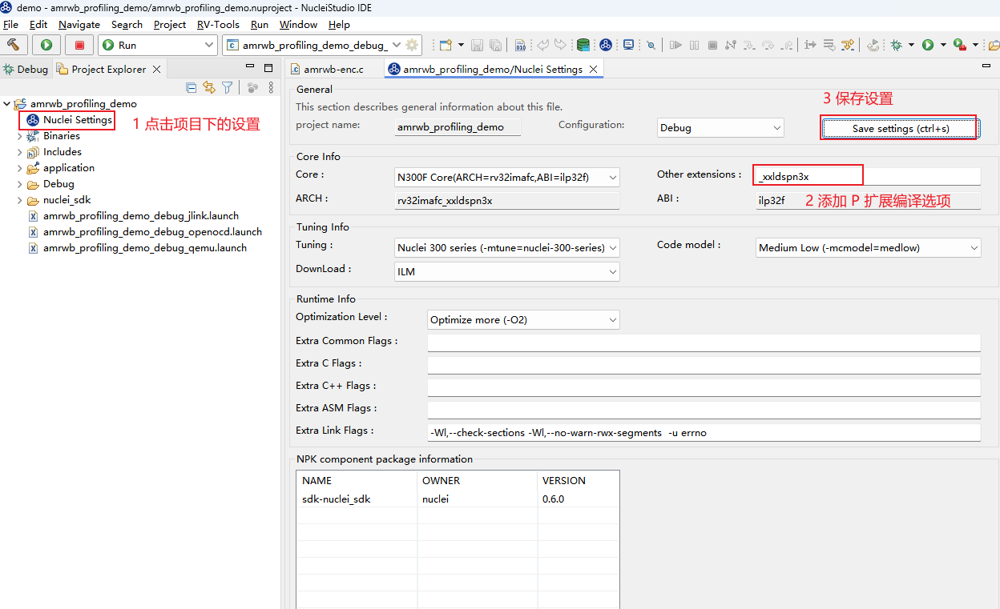
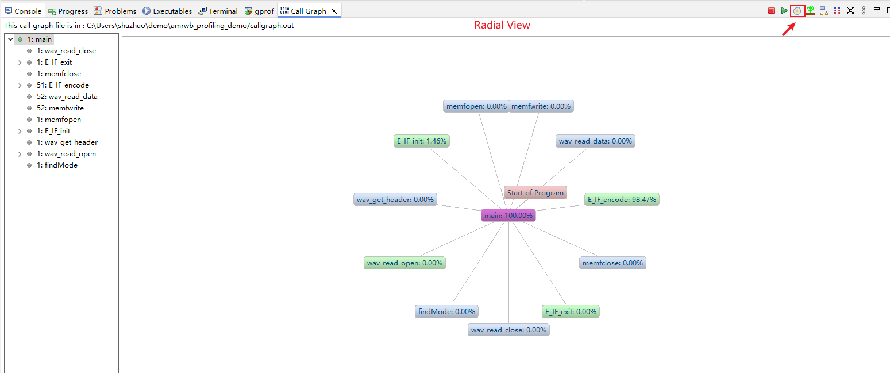
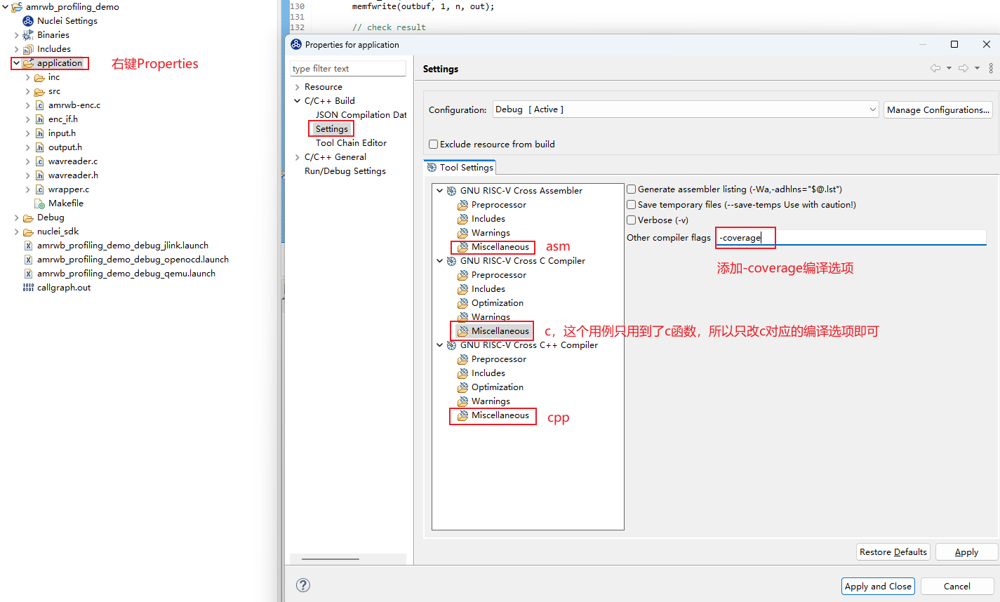
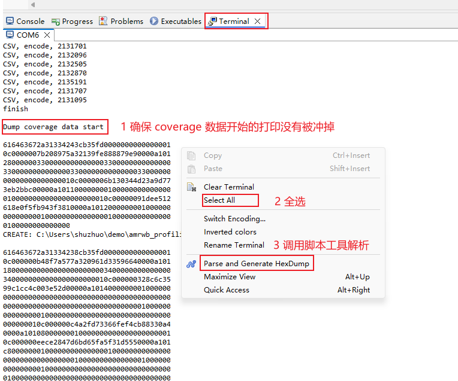

一个例子用来展示 Profiling 以及 Code coverage 功能¶
文档是基于 Nuclei Studio 的 2024.06 Windows 版本实测。
问题说明¶
Nuclei Studio 2024.06 提供 Profiling 功能、Call Graph 功能 以及 Code coverage 功能，方便用户使用。简单描述如下：
Profiling 功能：基于 binutils gprof 工具，可用于分析函数调用关系、调用次数、以及运行时间；通过 Profiling 抓取热点函数可以用来分析程序的瓶颈，以便进行性能优化。
* Call Graph 功能：基于 Profiling 功能，将函数调用关系、调用次数、以及运行时间用图展示出来，方便开发人员分析。
* Code coverage 功能*：基于 gcc 编译器提供 gcov 工具，可用来查看源码文件的代码覆盖率，帮助开发人员确定测试用例是否足够充分，是否覆盖了被测代码的所有分支和路径。
在 NucleiStudio_User_Guide.pdf 相关章节对这几个功能已经有较详细的描述，这篇文档以一个例子来展示它们的实际应用。
解决方案¶
1 环境准备¶
所需材料：
* Nuclei studio：NucleiStudio 2024.06，以 Windows 版本为例
* 用例： 以 AMR-WB-enc 即自适应多速率宽带编码音频算法为例，用户可以移植自己的用例
这里提供本示例使用的工程，有兴趣可以下载使用：
优化前的工程下载链接
下载 zip 包后，可以直接导入到 nuclei studio 中运行(导入步骤：File->Import->Existing Projects into Workspace->Next->Select archive file->选择zip压缩包->next即可)
基于 nuclei-sdk v0.6.0 移植 amrwbenc 裸机用例：
打开 Nuclei studio 建立 amrwbenc 工程，然后移植 amrwbenc 源码，最终用例可正常运行。用户可以移植自己的用例，不同用例移植的细节各不相同，这一步不是这篇文档的重点，略过。
2 Profiling 功能¶
Nuclei studio 中 Profiling 功能基于 binutils gprof 工具。编译时需带特定的编译选项 -pg 来编译指定源码文件，编译成功后得到 ELF 文件，然后在实际开发板上运行并收集需要的 gmon.out 文件，最终在 IDE 上以图形化的方式展示。所以还需要在用例末尾添加 gprof 数据收集代码，有两种方式：
* 方式1：移植 gprof 数据收集代码到自己的工程中，代码可以参考 Profiling README
* 方式2：基于 Nuclei studio 中的 Profiling demo 进行改造，即用自己的用例替换掉 Profiling demo 工程的的用例部分
下面示例采用后一种方法进行演示：
step1：新建 Profiling demo 工程
File->New->New Nuclei RISC-V C/C++ Project，选择Nuclei FPGA Evalution Board->sdk-nuclei_sdk @0.6.0
注意： Nuclei SDK 需选择 0.6.0 及以后版本才支持 Profiling 与 Code coverage 功能

step2：基于 Profiling demo 工程移植 amrwbenc 裸机用例
删掉 Profiling demo 工程中 application 中的原始用例，替换成 amrwbenc 用例，形成如下目录结构，并确保能编译成功。

step3：在用例结尾处添加 grof 数据收集代码，并添加 -pg 编译选项，重新编译代码
在 main 函数的结尾处添加 gprof 数据收集代码：
int main(int argc, char *argv[]) {
/*
* 代码省略
*/
/*
* 在main函数的结尾处添加gprof数据收集代码
*/
// TODO this is used for collect gprof and gcov data
// See Components/profiling/README.md about how to set the IDE project properities
extern long gprof_collect(unsigned long interface);
gprof_collect(2);
return 0;
}
收集 gprof data 有三种方式，通过入参不同进行区分：
- gprof_collect(0)：在缓冲区中收集 gprof 或 gcov 数据，在调试程序时可以使用 GDB 脚本转储 gcov 或 gprof 二进制文件
- gprof_collect(1)：使用 semihost 直接将 gprof 或 gcov 数据写入文件中
- gprof_collect(2)：直接在 Console 或 Serial Terminal 中转储 gcov 或 gprofdata
详情可参考 Profiling README，这里以将 gprof data 打印到串口（Console 或 Serial Terminal）为例。
添加 -pg 编译选项，重新编译代码：
注意： 选择 application, 对关键代码添加 -pg 编译选项，这个用例只有 C 代码，只对 C 代码添加 -pg 编译选项即可

step4：运行程序
有几种方式：
- qemu 模拟器（不需要硬件，简单跑一下流程，测试结果不准确）
- 上板测试 （基于定时器采集数据）
- 基于 xl_cpumodel （也是模拟器，结果比 qemu 准确，另一篇文章介绍）
这一篇文章只介绍 qemu 仿真与上板测试两种方式，qemu 收集的数据打印到 Console 口，上板实际运行输出到 Nuclei studio 的 Serial Terminal 口。
step5：解析 gprof 数据
开始解析 gprof 数据。注意： 这一步可能遇到一些问题，解决方法可参考 Profiling与 Code coverage 功能可能遇到的问题
- 在 qemu 上测试, log 打印到 Console 口
注意: qemu 仅用来模拟展示，如果希望得到准确的热点函数，需要上板测试。

解析完成后，会在当前工程目录下生成 gmon.out，双击打开展示：

- 上板测试 上板测试的步骤与 qemu 类似，唯一不同的是 gprof 数据输出到 Serial Terminal 上。
配置 Serial Terminal:
注意:如果串口工具已经打开，确保每次运行 gprof 前，清除掉串口打印（鼠标右键-> Clear Terminal），避免对数据解析产生影响。

同样, 全选 log，调用解析脚本解析，在工程文件夹下生成 gmon.out 文件，双击打开。
如下图是在板子上运行得到的 gprof 数据：

从而得到 TOP5 热点函数为：
cor_h_vec_012
ACELP_4t64_fx
voAWB_Residu
voAWB_Convolve
voAWB_Syn_filt
获得热点函数后，可以从热点函数入手开始优化，优化 TOP 函数往往可以事半功倍。
step6：优化热点函数
有如下几种方法优化热点函数：
- 调节编译器参数，针对整个工程或单独算子使用 O2/O3/Ofast 等优化等级，开启
-finline-functions-funroll-all-loops等优化选项 - 针对算法进行优化，使用更好的算法实现热点函数
- 使用 RISC-V 扩展指令（ RVP/RVV 扩展等）优化
这里以 RVP 扩展为例，按照热点函数从高到低，用 P 扩展来优化。需要确定所用硬件支持 P 扩展。
举例如下：
TOP1 热点函数为 cor_h_vec_012，分析函数，尝试使用 P 扩展优化：
如下以 defined __riscv_xxldspn3x 隔开的代码表示使用 Nuclei N3 P 扩展指令优化的代码。其中__RV_DSMALDA 是一条 Nuclei N3 P扩展指令，实现了 一次完成 4 笔 int16 相乘，最后累加，结果存放到 int64 变量中。这些指令可参考 Nuclei P 扩展指令
优化后的工程如下，可以与优化之前的工程做对比，只优化了cor_h_vec_012 算子:
使用 Nuclei N3 P 扩展指令优化的代码片段如下：
void cor_h_vec_012(
Word16 h[], /* (i) scaled impulse response */
Word16 vec[], /* (i) scaled vector (/8) to correlate with h[] */
Word16 track, /* (i) track to use */
Word16 sign[], /* (i) sign vector */
Word16 rrixix[][NB_POS], /* (i) correlation of h[x] with h[x] */
Word16 cor_1[], /* (o) result of correlation (NB_POS elements) */
Word16 cor_2[] /* (o) result of correlation (NB_POS elements) */
)
{
Word32 i, j, pos, corr;
Word16 *p0, *p1, *p2,*p3,*cor_x,*cor_y;
Word32 L_sum1,L_sum2;
cor_x = cor_1;
cor_y = cor_2;
p0 = rrixix[track];
p3 = rrixix[track+1];
pos = track;
for (i = 0; i < NB_POS; i+=2)
{
p1 = h;
p2 = &vec[pos];
#if defined __riscv_xxldspn3x
Word32 tmp1, tmp2;
int64_t sum64_1, sum64_2;
int64_t p64_1, p64_2;
sum64_1 = 0;
sum64_2 = 0;
for (j=62-pos ;(j - 4) >= 0; j -= 4)
{
p64_1 = *__SIMD64(p1)++;
tmp1 = __RV_PKBB16(*(p2 + 1), *p2);
tmp2 = __RV_PKBB16(*(p2 + 3), *(p2 + 2));
p64_2 = __RV_DPACK32(tmp2, tmp1);
sum64_1 = __RV_DSMALDA(sum64_1, p64_1, p64_2);
tmp1 = __RV_PKBB16(*(p2 + 2), *(p2 + 1));
tmp2 = __RV_PKBB16(*(p2 + 4), *(p2 + 3));
p64_2 = __RV_DPACK32(tmp2, tmp1);
sum64_2 = __RV_DSMALDA(sum64_2, p64_1, p64_2);
p2 += 4;
}
L_sum1 = (Word32)sum64_1;
L_sum2 = (Word32)sum64_2;
for ( ;j >= 0; j--)
{
L_sum1 += *p1 * *p2++;
L_sum2 += *p1++ * *p2;
}
#endif
L_sum1 += *p1 * *p2;
L_sum1 = (L_sum1 << 2);
L_sum2 = (L_sum2 << 2);
corr = (L_sum1 + 0x8000) >> 16;
cor_x[i] = vo_mult(corr, sign[pos]) + (*p0++);
corr = (L_sum2 + 0x8000) >> 16;
cor_y[i] = vo_mult(corr, sign[pos + 1]) + (*p3++);
pos += STEP;
p1 = h;
p2 = &vec[pos];
#if defined __riscv_xxldspn3x
sum64_1 = 0;
sum64_2 = 0;
for (j=62-pos ;(j - 4) >= 0; j -= 4)
{
p64_1 = *__SIMD64(p1)++;
tmp1 = __RV_PKBB16(*(p2 + 1), *p2);
tmp2 = __RV_PKBB16(*(p2 + 3), *(p2 + 2));
p64_2 = __RV_DPACK32(tmp2, tmp1);
sum64_1 = __RV_DSMALDA(sum64_1, p64_1, p64_2);
tmp1 = __RV_PKBB16(*(p2 + 2), *(p2 + 1));
tmp2 = __RV_PKBB16(*(p2 + 4), *(p2 + 3));
p64_2 = __RV_DPACK32(tmp2, tmp1);
sum64_2 = __RV_DSMALDA(sum64_2, p64_1, p64_2);
p2 += 4;
}
L_sum1 = (Word32)sum64_1;
L_sum2 = (Word32)sum64_2;
for ( ;j >= 0; j--)
{
L_sum1 += *p1 * *p2++;
L_sum2 += *p1++ * *p2;
}
#endif
L_sum1 += *p1 * *p2;
L_sum1 = (L_sum1 << 2);
L_sum2 = (L_sum2 << 2);
corr = (L_sum1 + 0x8000) >> 16;
cor_x[i+1] = vo_mult(corr, sign[pos]) + (*p0++);
corr = (L_sum2 + 0x8000) >> 16;
cor_y[i+1] = vo_mult(corr, sign[pos + 1]) + (*p3++);
pos += STEP;
}
return;
}
这个算子进行 P 扩展优化后，编译时带上 dsp 扩展编译：

CLean Project 并重新编译，重新跑一次profiling，可以看到优化效果，cor_h_vec_012 函数占用率有所下降，函数调用时间也有所减少。

注意： 上述仅提供简单的示例，用户可以依次对热点函数进行分析并优化，运行过程中由于采样等原因，导致 TOP 函数分布有所波动，这是正常的，最终精确的分析需要统计最终的总 cycle 数，然后计算提升比。
2 Call Graph 功能¶
Nuclei Studio 中 Call Graph 主要是通过分析 Profiling 的数据来获取到程序中函数的调用关系。

Call Graph 功能包括如下几种视图：
-
Radial View
本视图中展示了程序的调用关系。  -
Tree View
展示了 Radial View 中所选中的程序的调用关系、耗时所占比率、调用次数等信息；选中某一个函数，可以查看到它的父节点以及子节点等信息。
- Level View
与 Tree View 有点类似，展示了程序的调用关系以及调用次数。
- Aggregate View
以方图的方式，非常直观的展示了程序的耗时关系。
3 Code coverage 功能¶
Nuclei studio 中 Code coverage 功能基于 gcc 编译器提供的 gcov 工具，编译时需带特定的编译选项 -coverage 来编译指定源码文件，编译成功后得到 ELF 文件，然后在实际开发板上运行并收集需要的 coverage 文件(gcda/gcno 文件)，最终在 IDE 上以图形化的方式展示。
使用方法与 Profiling 功能类似，这里仅对不同的地方进行说明：
step1：新建 Profiling demo 工程
step2：基于 Profiling demo 工程移植 amrwbenc 裸机用例
step3：添加 gcov 数据收集代码，并添加 -coverage 编译选项，重新编译代码
在main函数的结尾处添加gprof数据收集代码：
int main(int argc, char *argv[]) {
/*
* 代码省略
*/
/*
* 在main函数的结尾处添加 gcov 数据收集代码
*/
// TODO this is used for collect gprof and gcov data
// See Components/profiling/README.md about how to set the IDE project properities
extern long gcov_collect(unsigned long interface);
gcov_collect(2);
return 0;
}
添加-coverage编译选项，重新编译代码：

step4：运行程序
可以在qemu中模拟运行，或者上板实际运行都可以（统计覆盖率，不涉及到性能分析，所以使用 qemu 或者上板测试都可以）。

解析之后，在Debug->application文件夹下生成了 gcda 与 gcno 文件，双击打开即可

4 补充¶
- Profiling 与 Code coverage 功能可以同时打开，只需添加一起收集 Profiling 数据与 Code coverage 数据的代码，并在编译时添加
-pg -coverage编译选项。
// TODO this is used for collect gprof and gcov data
// See Components/profiling/README.md about how to set the IDE project properities
extern long gprof_collect(unsigned long interface);
extern long gcov_collect(unsigned long interface);
gprof_collect(2);
gcov_collect(2);

- 可能遇见的问题：
- 片上内存不足，打印日志中有错误打印，gprof/gcov data 需要占用一定大小空间
- Console 或 Terminal 收集的数据不全导致解析数据不正确，需确认数据没有被冲掉，需要调节 Console 或 Terminal 输出大小限制
- 手动删掉 gmon.out 文件，再次解析，弹出 No files have been generated 错误弹框
上述具体解决方法可参考 Profiling与 Code coverage 功能可能遇到的问题